United States
Studebaker
Studebaker is a former car brand from the United States, founded in 1852 by Henry Studebaker, Clement Studebaker, John Studebaker. This page lists 28 of its models and their generations, with facts from Wikipedia.


- Founded
- 1852
- Models
- 28
- Generations
- 37
- Photos
- 37
All models and generations
28 models, each with all its generations.
Past models
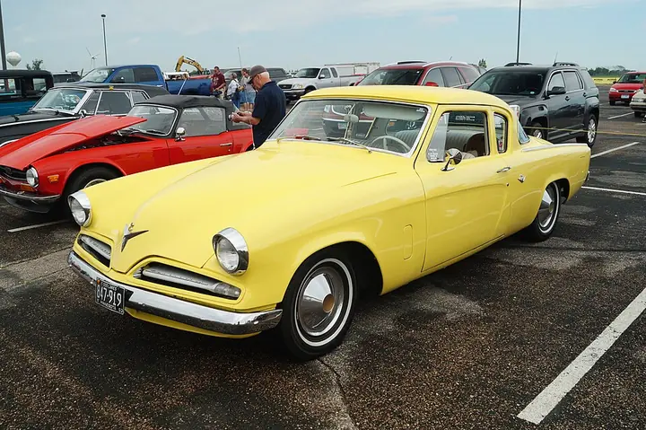
Studebaker Commander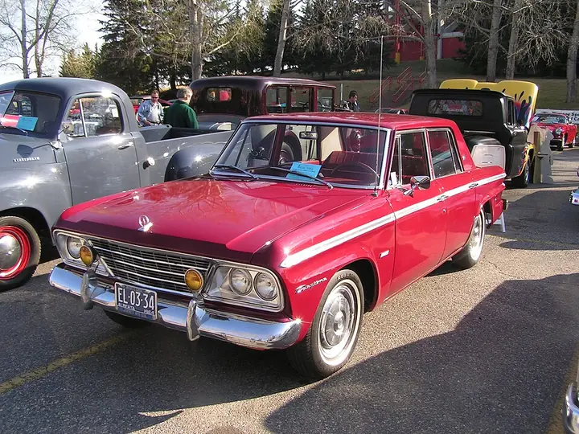
Studebaker Lark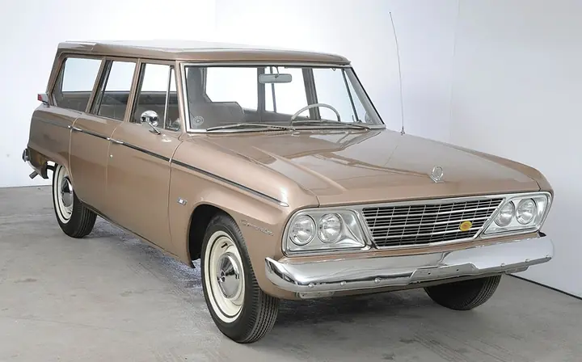
Studebaker Wagonaire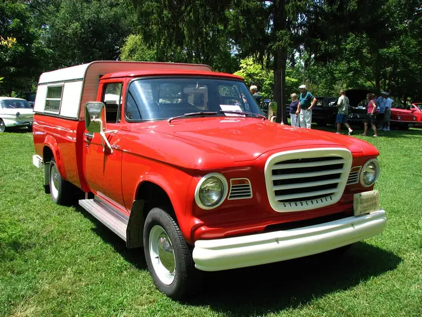
Studebaker Champ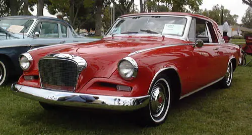
Studebaker Gran Turismo Hawk- Studebaker Avanti
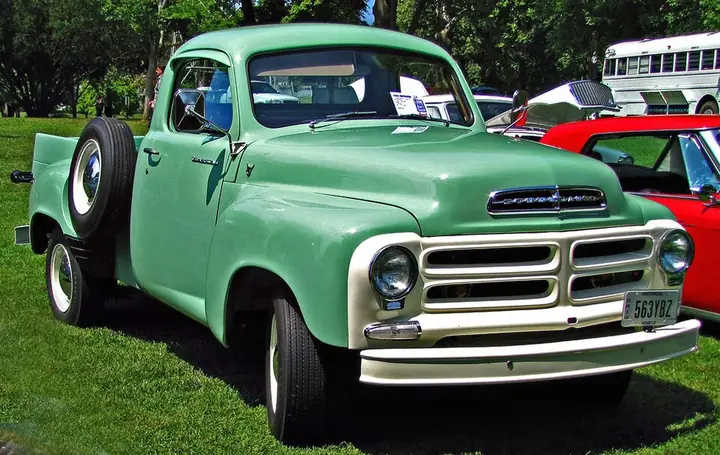
Studebaker E-series truck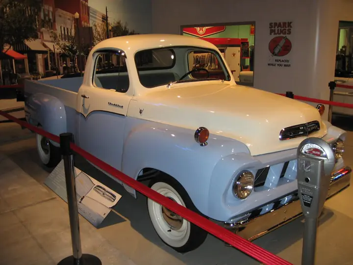
Studebaker Transtar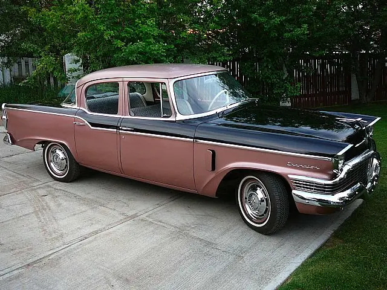
Studebaker Champion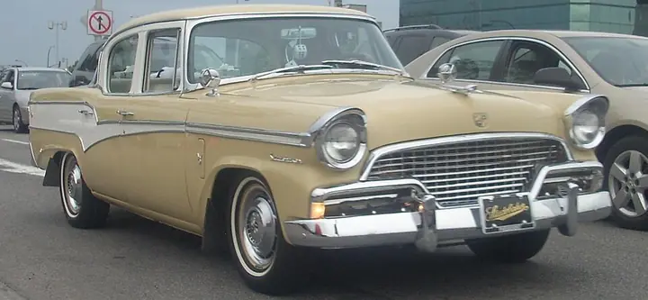
Studebaker President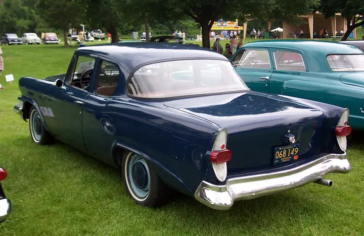
Studebaker Scotsman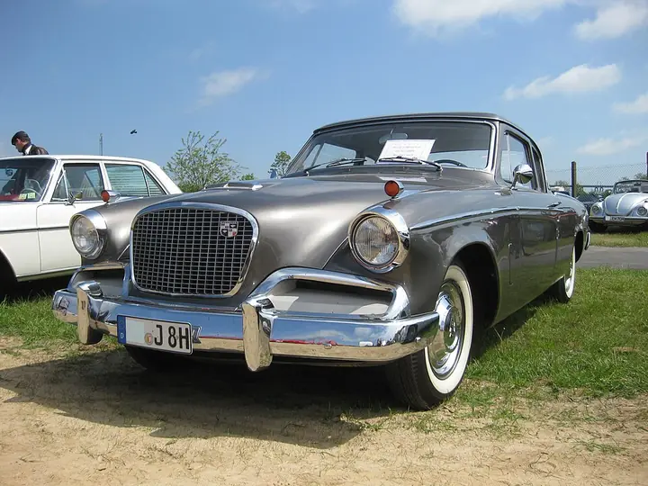
Studebaker Flight Hawk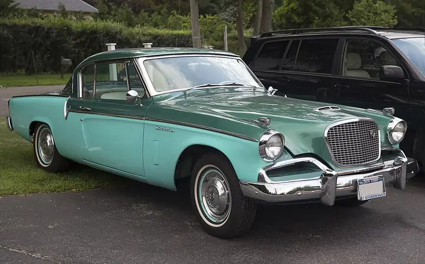
Studebaker Sky Hawk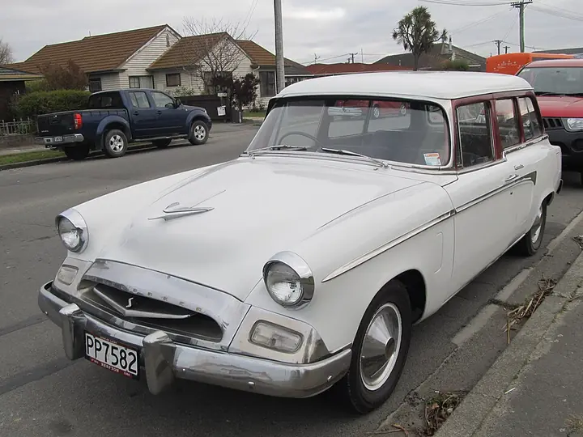
Studebaker Conestoga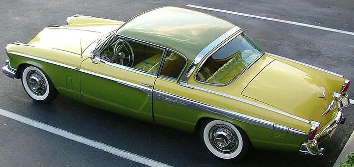
Studebaker Speedster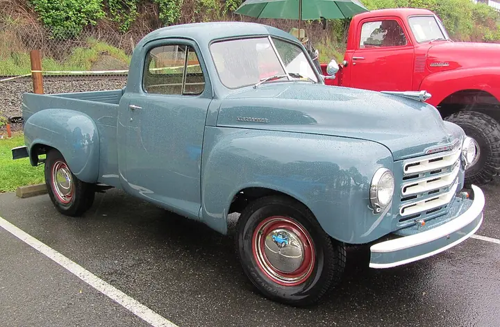
Studebaker 2R/3R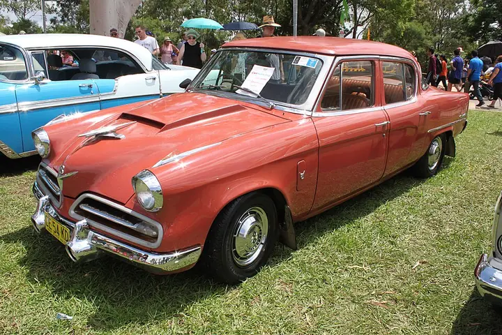
Studebaker Land Cruiser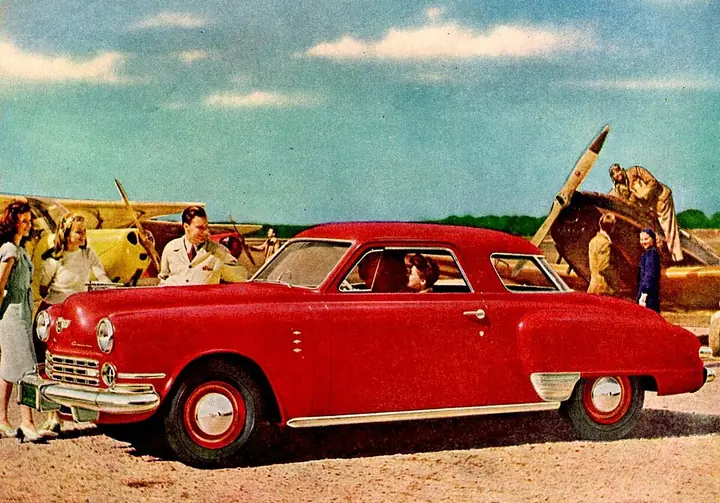
Studebaker Starlight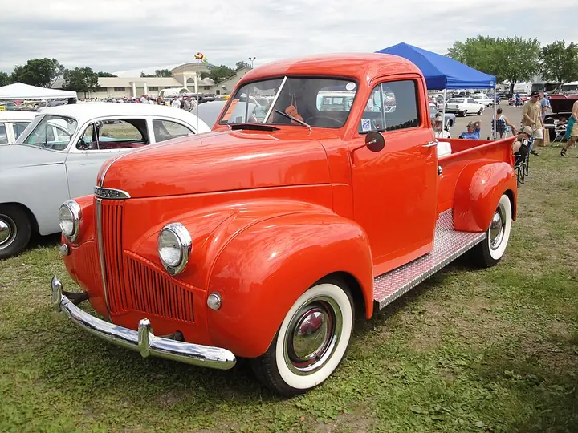
Studebaker M-series truck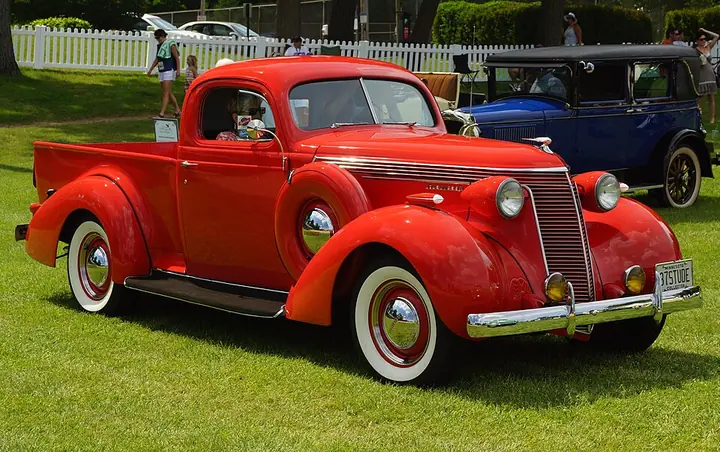
Studebaker Coupe Express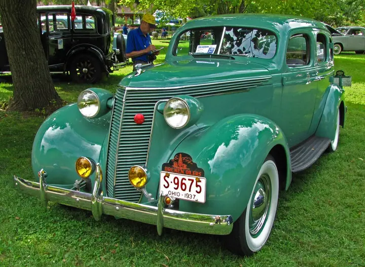
Studebaker Dictator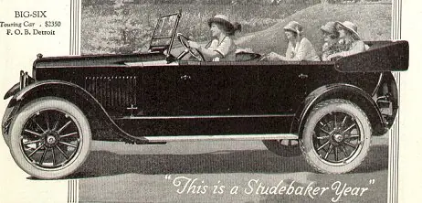
Studebaker Big Six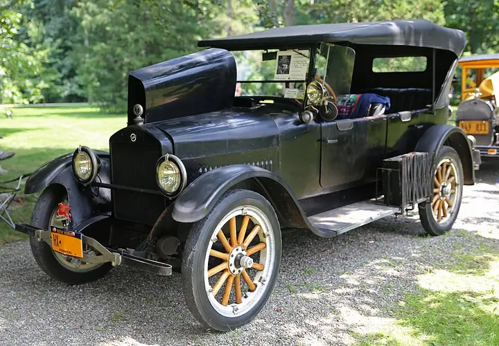
Studebaker Light Six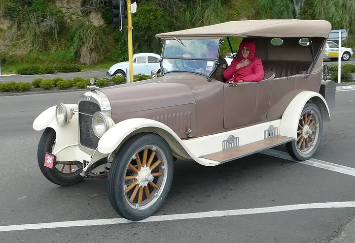
Studebaker Special Six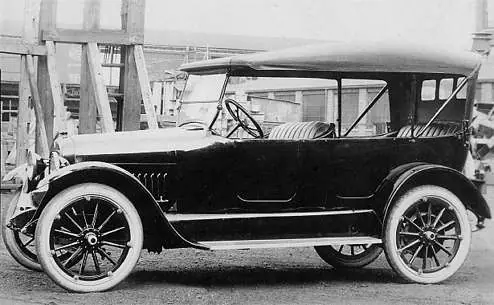
Studebaker Light Four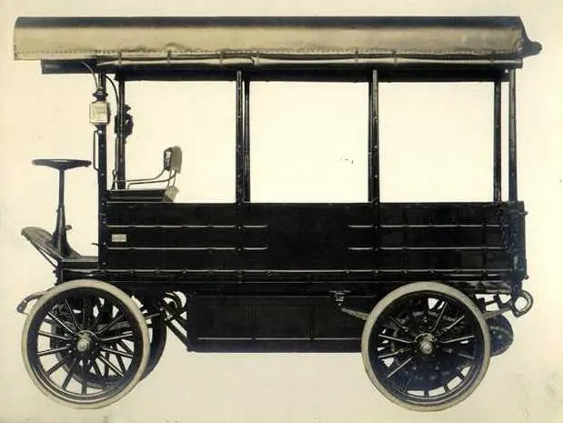
Studebaker Electric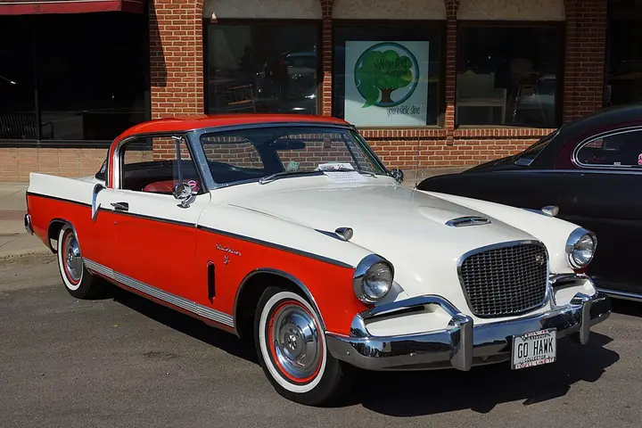
Studebaker Golden Hawk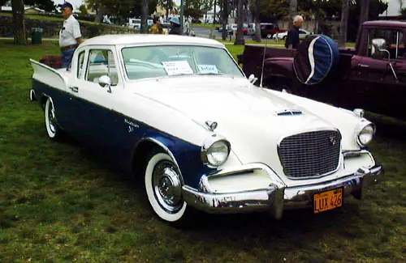
Studebaker Silver Hawk
Source: Wikipedia, CC BY-SA 4.0.
Other brands from United States
All United States → BuickDiscover
BuickDiscover CadillacDiscover
CadillacDiscover ChevroletDiscover
ChevroletDiscover
 ChryslerDiscover
ChryslerDiscover DeLoreanDiscover
DeLoreanDiscover
 DodgeDiscover
DodgeDiscover FiskerDiscover
FiskerDiscover FordDiscover
FordDiscover GMCDiscover
GMCDiscover
 HummerDiscover
HummerDiscover JeepDiscover
JeepDiscover LincolnDiscover
LincolnDiscover LucidDiscover
LucidDiscover
 MercuryDiscover
MercuryDiscover OldsmobileDiscover
OldsmobileDiscover PlymouthDiscover
PlymouthDiscover PontiacDiscover
PontiacDiscover RamDiscover
RamDiscover
 RivianDiscover
RivianDiscover
 SaturnDiscover
SaturnDiscover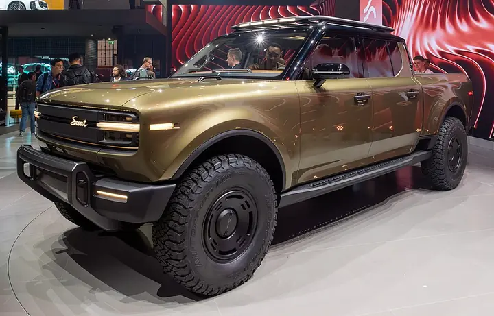
 ScoutDiscover
ScoutDiscover TeslaDiscover
TeslaDiscover